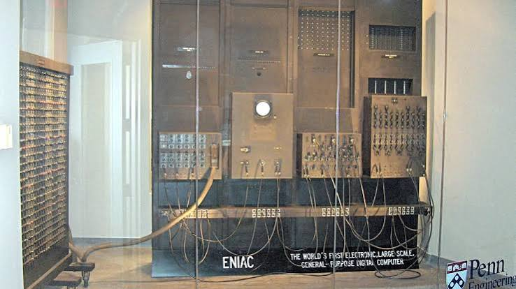
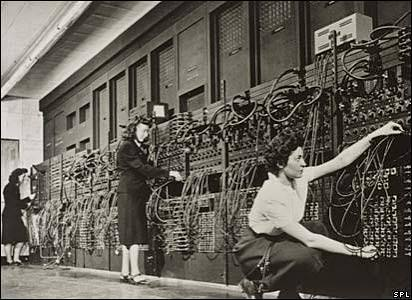
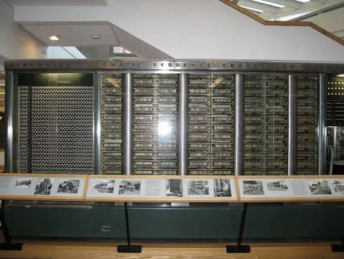
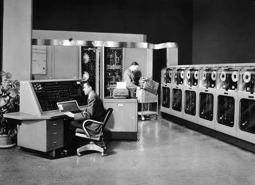
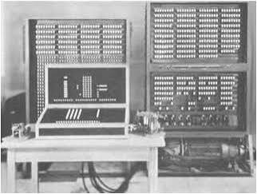
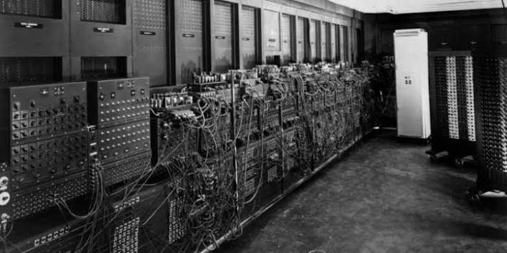

PRIMERA GENERACION DE COMPUTADORAS (1940 - 1956) - Estudio historico y tecnico exhaustivo sobre el nacimiento de la computacion electronica digital, el funcionamiento de las valvulas termoionicas, los primeros sistemas de almacenamiento y las maquinas pioneras que transformaron la ciencia y la ingenieria.

1. Contexto Historico y Antecedentes Directos - La primera generacion se desarrollo entre 1940 y 1956 bajo la presion estrategica de la Segunda Guerra Mundial y los inicios de la Guerra Fria, momentos en que el calculo de trayectorias balisticas de artilleria pesada, el modelado de reacciones en fisica nuclear y el criptoanalisis de senales militares enemigas desbordaron la capacidad de los calculadores humanos y de los analizadores diferenciales electromecanicos de engranajes. El punto de inflexion experimental comenzo entre 1937 y 1942 en la Universidad Estatal de Iowa, donde el fisico John Vincent Atanasoff y el graduado Clifford Berry construyeron el computador Atanasoff-Berry (ABC): esta maquina pionera incorporo por primera vez tres principios estructurales determinantes, que fueron la utilizacion de logica binaria digital (en lugar de la base decimal de las calculadoras de escritorio), la conmutacion puramente electronica mediante unos trescientos tubos de vacio y una memoria regenerativa de condensadores montados en un tambor giratorio (invencion ratificada formalmente en 1973 por el tribunal federal en la sentencia Honeywell v. Sperry Rand, que anulo la patente del ENIAC y reconocio a Atanasoff como creador del primer dispositivo de computo electronico digital automatico). Paralelamente en Berlin, el ingeniero Konrad Zuse desarrollo entre 1938 y 1941 la serie Z, culminando en la Z3 (mayo de 1941), la primera computadora binaria programable y automatica del mundo que empleaba 2.600 reles electromecanicos telefonicos con palabras de 22 bits y aritmetica de coma flotante. En Inglaterra, el ingeniero jefe de telecomunicaciones Tommy Flowers y los matematicos Max Newman y William Tutte en Bletchley Park concibieron la serie Colossus (el Mark 1 operativo en diciembre de 1943 con 1.500 valvulas y el Mark 2 en junio de 1944 con 2.400 valvulas): Colossus fue la primera computadora electronica digital a gran escala plenamente funcional de la historia, disenada exclusivamente para procesar y quebrar el trafico de teleimpresores Lorenz SZ40/42 del alto mando de Adolf Hitler a una velocidad de lectura optica de cinco mil caracteres por segundo sobre cintas de papel continuo, un secreto militar guardado bajo estricta reserva estatal hasta la decada de 1970.

2. El Tubo de Vacio: Principio Fisico y Desafios de Ingenieria - El componente electronico que definió a todas las maquinas de esta generacion fue la valvula termoionica o tubo de vacio. Desarrollado originalmente a partir del efecto Edison por John Ambrose Fleming (el diodo termoionico en 1904) y perfeccionado por Lee de Forest (el triodo Audion en 1906), un tubo de vacio consiste en una ampolla de vidrio sellada hermeticamente a la que se le ha practicado un vacio extremo para evitar que el aire se ionice o queme los componentes internos. En su interior, un filamento incandescente de tungsteno recubierto con oxidos de bario y estroncio calienta un catodo metalico, liberando electrones libres por efecto termoionico segun la ley de Richardson-Dushman; estos electrones viajan hacia una placa metalica o anodo que posee un potencial electrico positivo constante. Entre el catodo y el anodo se ubica una rejilla de control de malla fina de alambre: aplicando un pequeno voltaje negativo a la rejilla, se repele la nube de electrones y se interrumpe de forma fulminante el flujo electrico hacia la placa; al eliminar el potencial negativo, la corriente fluye libremente. Esta propiedad permitio a los tubos operar como biestables (flip-flops) e interruptores de conmutacion binaria que alternaban entre 0 y 1 miles de veces por segundo sin el desgaste ni la inercia mecanica de los reles. No obstante, su utilizacion a gran escala acarreaba inmensos inconvenientes fisicos: la combustion termica constante de filamentos calentados a cientos de grados demandaba una potencia electrica gigantesca (el ENIAC consumia mas de 150 kilovatios de potencia constante, elevando la temperatura de la sala por encima de los 50 grados Celsius sin ventilacion forzada); sufrian de una tasa de fallos de filamento (MTBF) que provocaba que en sistemas con quince o veinte mil tubos se fundiera una valvula cada cuarenta y ocho horas, obligando a los tecnicos a disenar procedimientos de calentamiento progresivo de filamentos para evitar choques termicos y bancadas de diagnostico para sustituir valvulas quemadas antes de iniciar un calculo.

3. Sistemas de Memoria y Almacenamiento en la Primera Generacion - Ante la inexistencia de semiconductores de silicio, los cientificos de los anos cuarenta tuvieron que inventar tecnologias de memoria primaria capaces de sostener datos de forma temporal y estable a velocidades compatibles con los circuitos electronicos. Coexistieron tres desarrollos sobresalientes: en primer lugar, las lineas de retardo acustico de mercurio, concebidas originalmente por J. Presper Eckert para la cancelacion de eco en sistemas de radar y adoptadas en el EDVAC, EDSAC y UNIVAC I: consistian en largos tubos de acero llenos de mercurio liquido a temperatura controlada, con cristales piezoelectricos de cuarzo en sus extremos; las senales electricas binarias se convertian en pulsos acusticos sonicos de alta frecuencia que viajaban por el mercurio a unos 1.450 metros por segundo; al alcanzar el otro extremo, se reconvertian en senales electricas, se amplificaban y se reinyectaban en un ciclo continuo continuo, reteniendo cientos de bits en transito acustico permanente. En segundo lugar, los tubos Williams-Kilburn, inventados en 1947 por Frederic Calland Williams y Tom Kilburn en la Universidad de Manchester: eran tubos de rayos catodicos comerciales convencionales donde el haz de electrones grababa puntos y rayas de carga electrostatica secundaria sobre la pantalla de fosforo, leidos de vuelta por una placa exterior de captacion metalica de aluminio, convirtiendose en la primera memoria RAM puramente electronica de acceso aleatorio de alta velocidad. En tercer lugar, los tambores magneticos: pesados cilindros metalicos recubiertos de una capa ferromagnetica de oxido de hierro que rotaban a velocidades de 3.000 a 12.000 revoluciones por minuto con multiples cabezas fijas de lectura y escritura alineadas a lo largo de sus pistas cilindricas, sirviendo como la memoria principal economica y duradera de computadoras como la IBM 650. Como medio externo de entrada de datos, codificacion de programas e impresion final se utilizo la tarjeta perforada estandar de cartulina de 80 columnas de IBM y cintas continuas de papel perforado leidas mediante contactos mecanicos o fotocelulas opticas.

4. Arquitectura de Hardware y Metodos de Programacion - En los primeros anos de la primera generacion no existian sistemas operativos, compiladores ni lenguajes simbolicos; la interaccion con la maquina se efectuaba en lenguaje maquina puro, consistente en cadenas directas de instrucciones codificadas en binario, octal o decimal que manipulaban manualmente los registros y las direcciones absolutas de memoria. El hito teorico mas influyente de toda la informatica moderna tuvo lugar en junio de 1945, cuando el matematico John von Neumann redacto el celebre First Draft of a Report on the EDVAC (un informe de 101 paginas elaborado a partir de debates tecnicos con Eckert y Mauchly en la Universidad de Pensilvania). Este documento formalizo la Arquitectura Von Neumann, la cual dividio el computador en cinco bloques fundamentales que rigen hasta el dia de hoy: la Unidad Central Aritmetica (CA / ALU) encargada de operaciones numericas, la Unidad Central de Control (CC) para decodificar y secuenciar instrucciones, la Memoria Central (M) unificada donde coexisten en el mismo espacio fisico tanto los datos como las instrucciones del programa (eliminando la necesidad de reconfigurar cables para cambiar de tarea), los canales de entrada y salida, y los registros temporales de alta velocidad. Esta arquitectura de programa almacenado contrasto con la Arquitectura Harvard (representada por el Harvard Mark I de Howard Aiken y Grace Hopper en 1944, que mantenia memorias y buses fisicamente separados para datos e instrucciones). A finales de esta generacion se produjeron las primeras herramientas de programacion moderna: en 1949, la matematica Kathleen Booth diseno en el Birkbeck College de Londres uno de los primeros lenguajes ensambladores de la historia (ARC Assembly) y escribio el primer manual pedagogico de programacion; poco despues, en 1951, Grace Murray Hopper desarrollo en la empresa Eckert-Mauchly el sistema A-0, el primer compilador rudimentario capaz de traducir secuencias de instrucciones matematicas a rutinas de lenguaje maquina enlazadas de manera automatica.

5. Analisis Detallado de las Maquinas Mas Importantes - El ENIAC (Electronic Numerical Integrator and Computer), financiado por el Ejercito estadounidense y desvelado en febrero de 1946 en la Universidad de Pensilvania por John Presper Eckert y John Mauchly, costo cerca de 487.000 dolares de la epoca: contenia 17.468 tubos de vacio, 7.200 diodos de cristal, 1.500 reles, 70.000 resistencias y 10.000 condensadores en una estructura en forma de U de treinta metros de longitud y 27 toneladas de peso; operaba a una frecuencia de 100 kHz con aritmetica decimal de contadores de anillo de diez posiciones y realizaba cinco mil sumas por segundo, siendo mil veces mas veloz que cualquier maquina anterior. La operacion practica del ENIAC recayo en seis brillantes matematicas contratadas como computadoras humanas por el Laboratorio de Balistica: Kathleen McNulty, Jean Jennings, Frances Bilas, Betty Snyder, Marlyn Wescoff y Ruth Lichterman, quienes sin lenguajes de programacion previos aprendieron los esquemas logicos del hardware y programaron a mano las ecuaciones diferenciales conectando cables en tableros de conmutacion y ajustando interruptores de funciones manuales. El 21 de junio de 1948, en la Universidad de Manchester, la maquina experimental Manchester Baby (SSEM), construida por Frederic Williams y Tom Kilburn, se convirtio en la primera computadora en la historia de la humanidad en ejecutar un programa almacenado en memoria electronica (los tubos Williams), calculando el factor mas alto del numero dos elevado a la dieciocho. En mayo de 1949, Maurice Wilkes construyo en Cambridge la EDSAC, la primera maquina de programa almacenado en prestar servicio de calculo continuado a investigadores. En marzo de 1951 vio la luz la UNIVAC I, la primera computadora digital comercial fabricada en serie en EE.UU.: utilizaba 5.200 tubos de vacio, memoria de retardo de mercurio y las revolucionarias unidades de cinta magnetica metalica UNISERVO (que lean 7.200 caracteres por segundo, superando con creces a las tarjetas perforadas), alcanzando celebridad mundial en noviembre de 1952 al predecir en television con Walter Cronkite la abrumadora victoria presidencial de Dwight D. Eisenhower con solo un 7% de los votos escrutados. Finalmente, la IBM 650 (1953) con memoria de tambor magnetico se transformo en el computador mas popular de toda la primera generacion, vendiendo mas de 1.800 unidades gracias a su fiabilidad y compatibilidad comercial.
6. Conclusion y Transicion a la Segunda Generacion - La primera generacion demostro concluyentemente que el procesamiento electronico era miles de veces superior a cualquier alternativa mecanica o manual, consolidando la arquitectura de Von Neumann y la computacion binaria programable. Su ciclo historico expiro entre 1955 y 1956 debido a dos innovaciones tecnologicas decisivas: la memoria de nucleos de ferrita trenzados (desarrollada por Jay Forrester en el proyecto Whirlwind del MIT y por An Wang), que elimino para siempre las fragiles lineas de retardo de mercurio, y la produccion comercial masiva del transistor de estado solido de silicio y germanio, marcando el nacimiento inmediato de la segunda generacion de computadoras.

Jesus Adriel Meza Machado 5DPGM